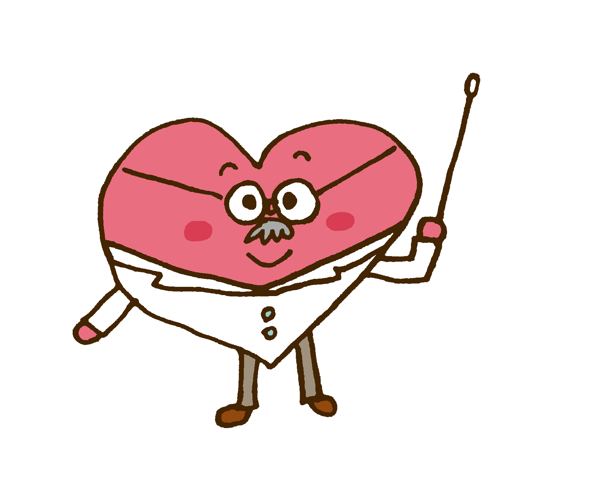
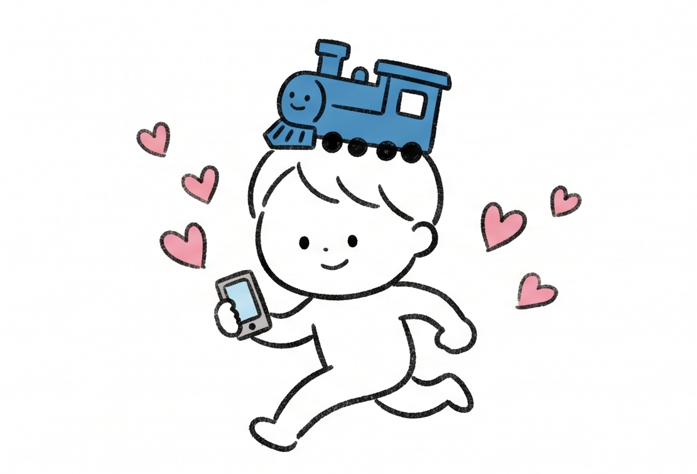
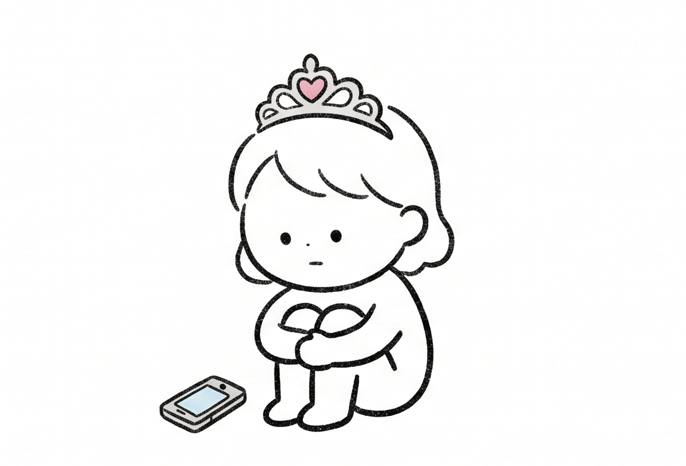

01
復縁相談・カウンセリング
専門のカウンセラーが、ご相談者の気持ちの整理と、お相手の状況の客観的把握をお手伝いします。話すことで見えてくるものを、一緒に丁寧に言葉にしていきます。
詳しく見るFUKUEN-YA — RECONCILIATION SUPPORT
別れの理由はひとつではありません。
行き違い、すれ違い、言葉にできなかった想い ── そのひとつひとつを、ご本人の言葉で整理するところから始めます。
復縁屋さんは、おふたりの関係を「もう一度ていねいに見つめ直す」ためのご相談窓口です。

Pain Points
何をどう動けば復縁できるのか、
正解が分からない
焦って連絡したくなるけど、
嫌われそうで怖い
待っていればいいのか、
動くべきなのか分からない
相手の本当の気持ちが、
もう分からなくなった
誰にも相談できない悩みを、
一人で抱え込んでいる
気持ちが整理できないまま、
時間ばかりが過ぎている
その「自分の傾向」と
「お相手の状況」を、
私たちが一緒に整理します。
Greeting
大切な誰かとの関係を、ひとりで抱え込んでいませんか。
当ホームページをご覧いただき、誠にありがとうございます。復縁屋さんは、別れや関係の悪化に悩まれている方が、もう一度ご自身の気持ちを整理し、これからの選択肢を冷静に考えていただくための「相談・カウンセリング窓口」として運営しています。
ひと口に「復縁したい」と申しましても、その背景にあるご事情やお気持ちは、おひとりおひとりまったく異なります。「あのときの一言を取り消したい」「もう一度きちんと話す機会が欲しい」「気持ちの整理がつかないまま時間ばかりが過ぎてしまっている」── そうしたお気持ちに、まずは丁寧に耳を傾けるところから、ご相談は始まります。
私どもがお手伝いできるのは、結果をお約束することではありません。ご状況を多角的に整理し、おふたりの関係を見つめ直すための客観的な視点と、これからの選択肢をご一緒に考えることです。続けるご決断も、ここで一度立ち止まるご判断も、すべてご相談者ご自身に委ねられています。私どもは、その判断のための材料を、できる限り誠実にご提供いたします。
どうぞ、お気軽にご相談ください。ご相談・お見積りに費用はかかりません。お話しいただいた内容は厳重に管理し、第三者にお伝えすることは決してありません。
── 復縁屋さん 代表カウンセラー
Our Promise
安心してお話しいただくために、私どもは次の5点をお守りします。
初回のご相談・お見積りには費用をいただきません。費用が発生する場合は、必ず事前に書面でご説明します。
ご相談内容・個人情報は厳重に管理し、第三者へ開示することは一切ございません。社内でも担当者以外がアクセスすることはありません。
お見積りでお伝えした金額以外を、後から追加で請求することはありません。明朗会計を徹底しております。
ご相談だけのご利用も歓迎です。ご検討期間に期限を設けたり、即決を求めることは決していたしません。
ご状況により結果はさまざまです。「必ず復縁できる」とは決して申し上げません。代わりに、最善の選択肢を一緒に探します。
16 Types Diagnosis
12問の質問で、あなたの「復縁アプローチタイプ」と専門家からの処方箋を無料で診断。
心理学に基づいた12問の質問で、あなたの復縁アプローチを16タイプに分類。プロのカウンセラーが、各タイプに合わせた具体的な処方箋をお伝えします。






※全16タイプ。診断後にあなたのタイプが判明します。
Service
ご状況に応じて、相談・コンサル・状況確認を組み合わせます。
専門のカウンセラーが、ご相談者の気持ちの整理と、お相手の状況の客観的把握をお手伝いします。話すことで見えてくるものを、一緒に丁寧に言葉にしていきます。
詳しく見るご相談・状況分析・連絡再開のタイミング設計まで、復縁に向けた一連のプロセスを継続的に伴走します。月次レポートで進捗を可視化します。
詳しく見る「次にどう接するべきか」「どんな言葉を選ぶべきか」── 個別の場面に応じた具体的なアドバイスを、メール・チャットで継続的にお伝えします。
詳しく見るお相手の現在の状況（連絡可否・心情の傾向）を、ご相談者からの情報と公開情報をもとに整理します。判断材料を客観化するためのプロセスです。
詳しく見るCase
状況に応じた最適な進め方をご案内します。
交際中の別れ、突然の別れ、距離ができてしまった関係。最も多くご相談をいただくケースです。
詳しく見る男性のご相談者から、別れた彼女との関係修復に関するご相談を多くいただきます。
詳しく見る女性のご相談者によくお話しいただく状況です。連絡再開の判断の整理からお手伝いします。
詳しく見る結婚生活におけるすれ違いや別離の危機。お子さま・家計・ご親族との関係も視野に入れます。
詳しく見る離婚に至る前段階としての別居。離れて暮らすご夫婦の関係再構築のご相談です。
詳しく見るご両親・お子さま・ご兄弟との断絶や疎遠。家族間の関係修復にもお応えしています。
詳しく見る長年の友人との行き違いを修復したい、というご相談も承ります。
詳しく見るBy Situation
別れに至った経緯ごとに、進め方の考え方をご紹介します。
By Region
全国対応・オンライン相談可。お住まいに合わせたご案内もご用意しています。
By Profile
ご相談者のお立場に応じた、配慮の角度をご案内します。
Numbers
ご相談実績と運営体制の概要です。
※ご相談件数はカウンセリング・お問い合わせを含む累計です。結果を保証する数値ではありません。
Flow
「いきなり契約」ではありません。まずは一度、お話を伺います。
無料相談フォームまたはお電話で、簡単な状況をお知らせください。24時間フォーム受付、深夜・早朝のお問い合わせにも翌営業日中にご返信します。
ご都合のよい日時に、専門カウンセラーがご相談者のお話を伺います。お電話・オンライン（Zoom）・対面のいずれにも対応します。
ご相談内容を踏まえ、サポート可能な範囲と進め方、ご予算感を書面でお見積りします。即決を求めることはありません。
ご納得のうえご契約いただいたお客さまから、サポートを開始します。月次レポートで進捗を可視化します。
Voice
実際にご利用いただいた方からのコメントを抜粋してご紹介します。
別れた後、自分のどこが悪かったのかとひたすら自分を責めていました。カウンセラーの方は、私の話を遮ることなく最後まで聞いてくださり、その上で「いまの状況をこういう視点でも見てみませんか」と提案してくださいました。結果ではなく、ご相談を受けて気持ちが少しずつ前向きに整理できたことが、何より大きかったように思います。
※個人の感想です。結果や効果を保証するものではありません。
別居して半年が経った頃、勢いで連絡を取ろうとしていた私を、カウンセラーが冷静に止めてくださいました。「いまのタイミングは奥さまの心情を踏まえると逆効果かもしれません」と。その判断材料を一緒に整理してくださったことで、結果的に焦らず時間を置くことができました。
※個人の感想です。結果や効果を保証するものではありません。
News
サービスに関するお知らせと、最新の読み物をご案内します。
FAQ
ご相談前に、まずはこちらをご覧ください。
はい、初回のご相談・お見積りは無料です。費用が発生する場合は、必ず事前に書面でご説明し、ご納得のうえご契約いただいた場合にのみ料金が発生します。
結果をお約束することはできません。ご状況によりさまざまです。私どもがお手伝いできるのは、おふたりの関係を客観的に整理し、これからの選択肢をご一緒に考えることです。「必ず」という表現を私どもが使うことはありません。
ご相談内容・個人情報は厳重に管理し、第三者に開示することはございません。社内でも担当カウンセラー以外がアクセスすることはありません。
ご状況・ご要望によって異なります。自社分割・各種ローン対応で月々6,300円〜のお支払いプランもございます。詳細は料金ページをご覧ください。
もちろんです。お話を整理するだけのご利用も歓迎しています。無理な勧誘はいたしません。